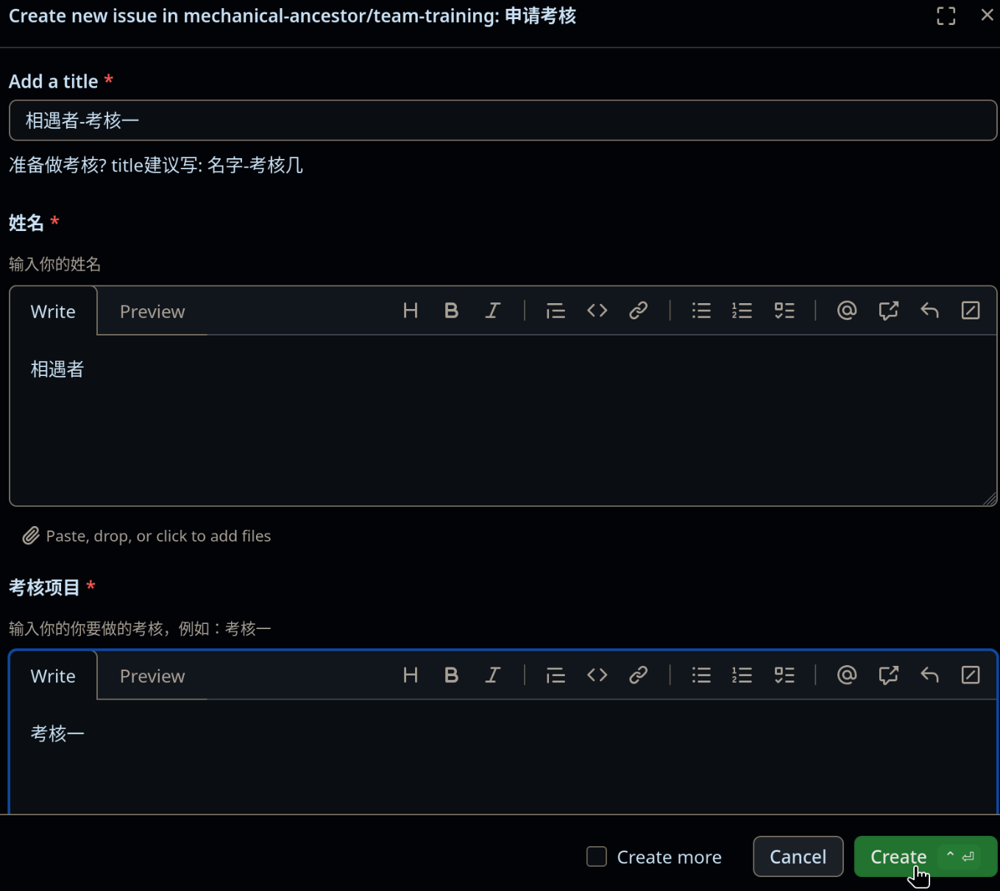

为什么考核要申请
这是为了方便追踪每个人的考核进度，提高考核效率， 也帮助每个人提前熟悉分工明确的开发流程。
申请考核
查找考核issue
要完成一个考核，你需要在考核文档仓库的Issue里找到对应的考核Issue,

在这个issue中的介绍有一个链接，指向考核几的仓库
创建问题
点击New issue按钮，再选择申请考核

根据模板提示填写即可
最后点击Create

加入MA的Github组织
等待管理员创建分支
等待管理员为你创建开发分支，管理员创建后，一般会在你的Issue里留言，并留下创建的分支的链接，并且Github会通过邮件自动通知你，管理员的留言如下图：

进入分支，完成考核
进入这个branch，在这里完成你的考核

关闭子问题，完成考核
完成后，先进入子问题，然后在Add a comment中写下你的考核完成情况，例如完成了什么
然后点击Close with comment，即关闭问题。